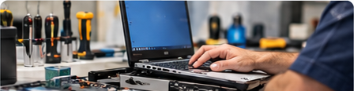

Contratos de manutenção
Planos de manutenção para manter sua estrutura de TI sempre funcionando.
Saiba maisPlanos de manutenção para manter sua estrutura de TI sempre funcionando.
Saiba mais
Suporte e reparo para computadores, notebooks, monitores, impressoras e muito mais.
Saiba maisDesde 1993
A Alfatek Informática atua no setor de tecnologia, oferecendo atendimento em campo e balcão, além de serviços de manutenção para computadores, monitores, notebooks, impressoras, servidores e periféricos.

Nossa equipe está pronta para atender você.
Telefone(51) 4009-2000
E-mailalfatek@alfatek.com.br
LocalizaçãoPorto Alegre - RSAtendimento em campo e balcão